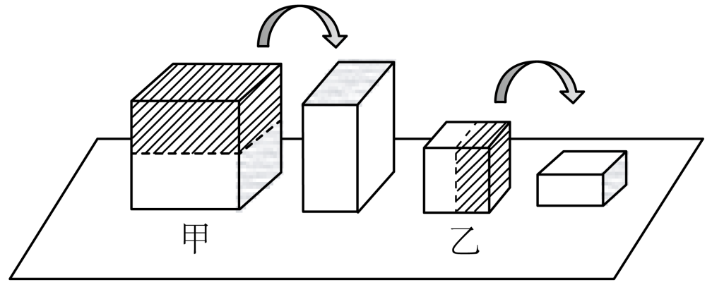

实心均匀正方体切割与旋转 · 压强变化量比较
实心均匀正方体甲、乙置于水平地面上，它们对地面的压强分别为 $p_{\text{甲}}$、$p_{\text{乙}}$。正方体甲沿水平方向切去一半，正方体乙沿竖直方向切去一半，并将甲、乙剩余部分均顺时针旋转 $90°$，如图所示。甲、乙剩余部分顺时针旋转 $90°$ 前后对地面的压强变化量 $\Delta p_{\text{甲}}$ 小于 $\Delta p_{\text{乙}}$。关于原来的压强 $p_{\text{甲}}$、$p_{\text{乙}}$ 的判断，正确的是（ ）

设原正方体边长均为 $L$。
① 甲的分析（沿水平方向切去一半）：
切面与地面平行，切完后是一块 $L \times L \times \dfrac{L}{2}$ 的扁方块（底面积仍是 $L^2$，高度减半为 $\dfrac{L}{2}$）。
- 旋转前（立着放）：底面积 $S_1 = L^2$，高度 $h_1 = \dfrac{L}{2}$，质量 $m = \rho_{\text{甲}} \cdot L^2 \cdot \dfrac{L}{2}$。
$$p_{1} = \dfrac{m g}{S_1} = \dfrac{\rho_{\text{甲}}\,L^2 \cdot \dfrac{L}{2}\cdot g}{L^2} = \dfrac{1}{2}\,\rho_{\text{甲}} L g = \dfrac{1}{2}p_{\text{甲}}$$
- 旋转后（顺时针 $90°$ 躺平）：底面积 $S_2 = L \cdot \dfrac{L}{2} = \dfrac{L^2}{2}$，高度 $h_2 = L$。
$$p_{2} = \dfrac{m g}{S_2} = \dfrac{\rho_{\text{甲}}\,L^2 \cdot \dfrac{L}{2}\cdot g}{\dfrac{L^2}{2}} = \rho_{\text{甲}} L g = p_{\text{甲}}$$
- 压强变化量：
$$\Delta p_{\text{甲}} = |p_{2} - p_{1}| = p_{\text{甲}} - \dfrac{1}{2}p_{\text{甲}} = \dfrac{1}{2}p_{\text{甲}}$$
② 乙的分析（沿竖直方向切去一半）：
切面与地面垂直，切完后是一块 $\dfrac{L}{2} \times L \times L$ 的窄方柱（高度仍为 $L$，底面积减半为 $\dfrac{L^2}{2}$）。
- 旋转前：底面积 $S_1 = \dfrac{L^2}{2}$，高度 $h_1 = L$，质量 $m = \rho_{\text{乙}} \cdot \dfrac{L^2}{2} \cdot L$。
$$p_{1} = \dfrac{m g}{S_1} = \rho_{\text{乙}} L g = p_{\text{乙}}$$
- 旋转后：底面积 $S_2 = L^2$，高度 $h_2 = \dfrac{L}{2}$。
$$p_{2} = \dfrac{m g}{S_2} = \dfrac{\rho_{\text{乙}}\,L^2 \cdot \dfrac{L}{2}\cdot g}{L^2} = \dfrac{1}{2}\rho_{\text{乙}} L g = \dfrac{1}{2}p_{\text{乙}}$$
- 压强变化量：
$$\Delta p_{\text{乙}} = |p_{1} - p_{2}| = p_{\text{乙}} - \dfrac{1}{2}p_{\text{乙}} = \dfrac{1}{2}p_{\text{乙}}$$
③ 排除其他选项：
故选 A。